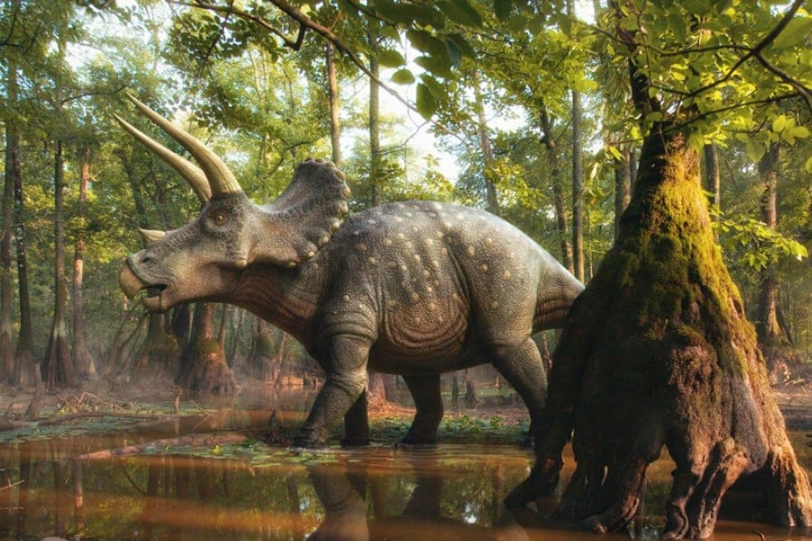

Triceratops es un género con dos especies conocidas de dinosaurios ceratopsianos ceratópsidos, que vivieron a finales del período Cretácico, hace aproximadamente entre 68 y 66 millones de años, durante el Maastrichtiense, en lo que hoy es Norteamérica